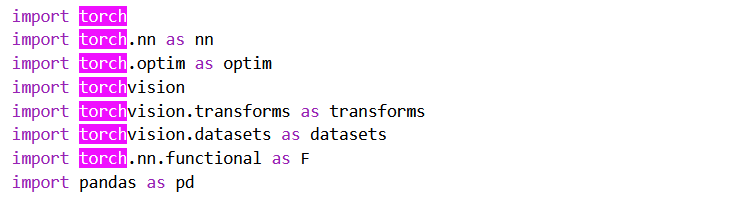
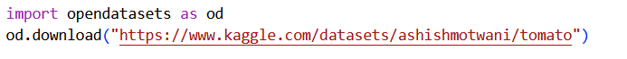
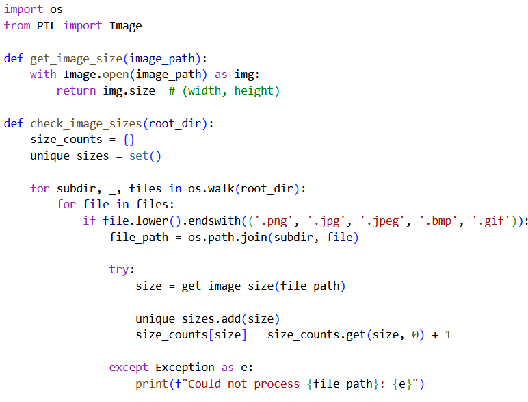
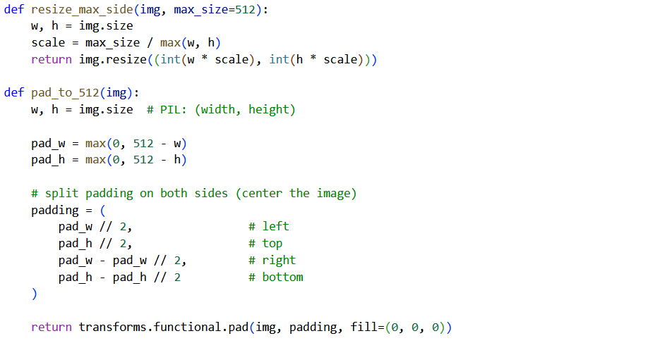
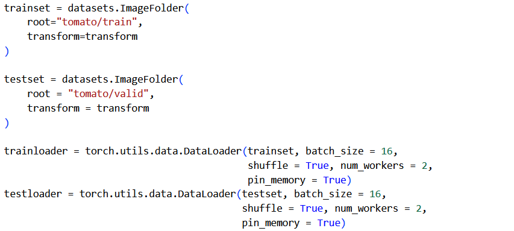
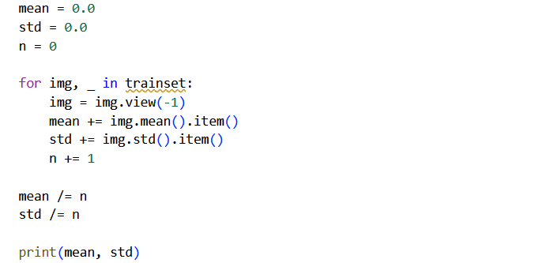
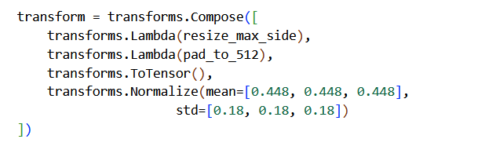
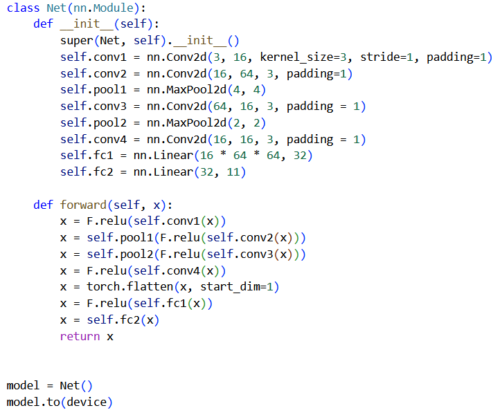
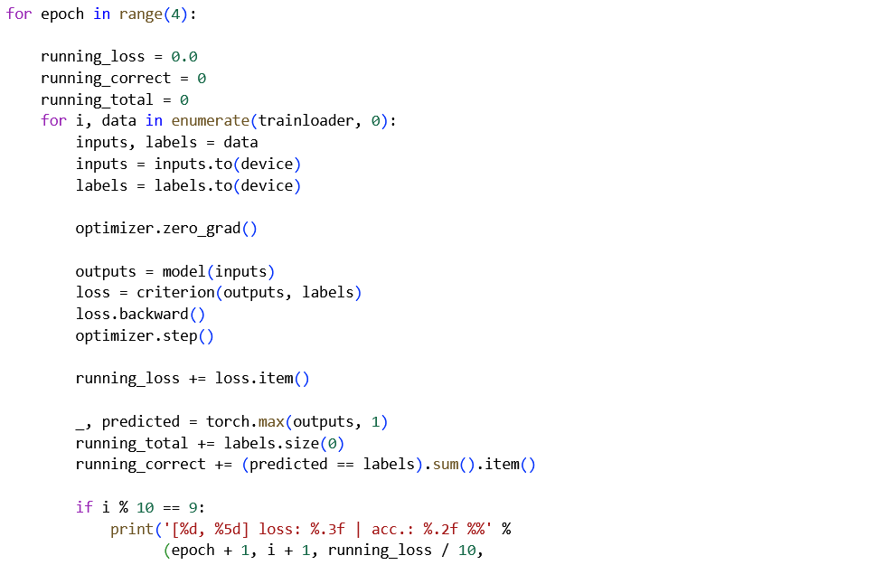

In this project, I trained a model on the Tomato Leaves Disease dataset, by Ashish Motwani and Qasim Khan. For learning purposes, I created the model from scratch (as opposed to fine-tuning an already existing model, which would've been a more effective approach). You can find and run my code at Google Colab.
The goal of this project is to classify pictures of tomato leaves into 11 categories; the first category is "healthy", while the other 10 correspond to various tomato plant diseases.
Food security is becoming an increasingly acute issue, as the global population continues to rise. Food production must keep increasing, but we cannot further expand the area of our farmlands (as that would imply intense deforestation). In this context, increasing the productivity of fields (e.g., through early detection and treatment of diseases) becomes vital. And, in a huge field, an automated system can be much more effective at detecting early-stage disease than a farmer.
So, with this important context aside, let's dive into the code!
1. Library Imports
We first import some standard libraries:

We begin with pytorch, the basic library for building the neural network. The module nn gives us the object class Module, which represents an abstraction of a Neural Network. Basically, all neural networks created with pytorch are subclasses of this nn.Module class. This way, they inherit the mechanisms for backpropagation and forward propagation from nn.Module and we only have to specify the architecture of our model.
Next, nn.optim contains the different optimisers we can use for the convergence of our model. Torchvision contains tools for computer vision. We'll use its transforms module for the preprocessing of our data. It also contains some standard datasets, but we'll use a kaggle dataset instead. Functional contains our activation functions and, finally, pandas can be used for the preprocessing of data, but here we only need torchvision.transforms.
2. Fetching the Data
We then download our data with the opendatasets library:

It's automatically saved to a subfolder called tomato. It has the standard structure for image datasets, with the images of each class contained in a different folder:
tomato/
├── train/
│ ├── Bacterial_spot/
│ ├── Early_blight/
│ ├── Late_blight/
│ ├── Leaf_Mold/
│ ├── Powdery_mildew/
│ ├── Septoria_leaf_spot/
│ ├── Spider_mites Two-spotted_spider_mite/
│ ├── Target_Spot/
│ ├── Tomato_Yellow_Leaf_Curl_Virus/
│ ├── Tomato_mosaic_virus/
│ └── Tomato___healthy/
└── val/
├── Bacterial_spot/
├── Early_blight/
├── Late_blight/
├── Leaf_Mold/
├── Powdery_mildew/
├── Septoria_leaf_spot/
├── Spider_mites Two-spotted_spider_mite/
├── Target_Spot/
├── Tomato_Yellow_Leaf_Curl_Virus/
├── Tomato_mosaic_virus/
└── Tomato___healthy/
3. Preprocessing
Next, we move on to preprocessing. Its goal is twofold; on the one hand, we ensure that all of our data has the same dimensions, so that we can pipeline it to the entry layer of the NN. On the other hand, we change its structure (e.g., with normalisation), so as to make training more efficient. We begin by checking the dimensions of our images, with this function:

More than 900 different dimensions with all kinds of aspect ratios exist! It is vital to resize the images. But I decided to not change the aspect ratios, as the distortion would be particularly intense and it could hamper the detection of subtle disease signs. Since no built-in solutions exist for our case, we create our own function to scale the picture and pad it with black pixels, so that the final dimension is 512x512.

For training a neural network, such relatively high resolution means big first layers, which are costly to train. However, reducing the resolution could imply losing important early signs of disease.
The functions above are designed to have a PIL Image object as their input. PIL.Image is a module that pytorch uses under the hood to handle images. More precisely, our data loader will look like this:

ImageFolder is the precise function that reads the images using PIL.Image. It also automatically assigns them labels, based on the name of the folder that they're in.
The transform that the data loader applies on the data is meant to apply the resize and padding functions shown above. It will also include a normalisation, that removes the necessity for the model to learn the bias. To normalise, we compute the mean and standard deviation of the training set (the model must not know anything about the test set!):

...and then we define our transformation, using pytorch (to ensure compatibility with the data loader):

4. Building the CNN
Finally, it's time to build the Convolutional Neural Network! The architecture needs to make use of pooling to reduce the complexity, since the inputs are 512x512. But, at the same time, we do not want to pool too early, as that could prevent us from learning some fine patterns accurately. Thus, we create two convolutional layers and then do our first (albeit aggressive) pooling. Since we are trying to spot particular patterns that may even be mutually exclusive, we choose max pooling as the pooling function.

Then we continue with convolutions, pooling and some fully connected layers to analyse the results from the convolutions. The layers that characterise the structure of the model are in the __init__ method, while forward describes the forward propagation in the model. Now, we move on to the training loop!

As criterion, we use cross entropy. This is because the output of the model is an 11-element vector, which corresponds to the likelihood of the image being in each of the 11 categories. Therefore, we want the discrete distribution that the model outputs, to be the same as the real distribution (which always matches one of the unit vectors e_1, e_2, ..., e_11). As optimiser, we choose AdamW, a pretty standard choice for image datasets.
Results & Next Steps
After 4 epochs, the model achieves a training accuracy of about 85% and a test accuracy of 75%. Overfitting has started to happen, therefore our model is not too small to learn the data. A promising solution to counter overfitting, which will be explored in part 2, would be to randomly tweak the data (by introducing some noise and applying rotations).